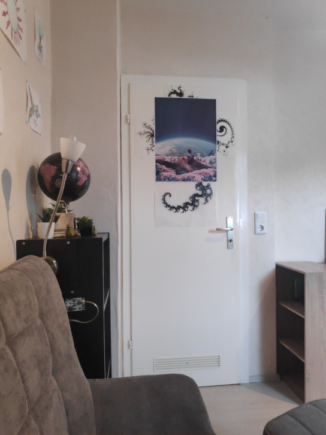

Fraktale an der Wand

Manchmal habe ich ein Gefühl, was ich als "Blanko-Check Interesse" bezeichnen würde. Es ist das
Gefühl von Interesse, aber an nichts Konkretem. Es ist außerdem mit einem Gefühl von Klarheit
und der Lust auf Etwas (nichts konkretes) verbunden. Es ist für mich aber kein Grund, in dem Moment
tatsächlich
etwas Konkretem nachzugehen. Denn das Gefühl hält nur sehr kurz. Aber trotzdem habe ich dieses Gefühl
gerne.
Die Poster oben im Bild kommen diesem Gefühl in einem gewissen Sinne nahe. Das Genre dieser Poster heißt, soweit ich weiß, "Weltraum-Retro". Der Blick in den Weltraum ist für mich ein Symbol dafür, dass es noch viel zu entdecken gibt. Aber nicht in dem Sinne, dass es etwas sein muss, was noch nie jemand gesehen hat. Sondern eher, dass es viele Themen und Dinge gibt, die noch auf meine Entdeckung warten.
Die Fraktale um die Poster herum sind eine spontane Idee, die ich mal hatte. Meine ursprüngliche Idee war, dass ich mit den Fraktalen die Poster so verbinde, dass es zu einem einzigen Gesamtbild wird. Das Ergebnis ist etwas "dünn" geworden. Die Fraktale verschlingeln sich nicht so ineinander, wie ich es mir vorgestellt hate. Im Wesentlichen ist es daran gescheiter, dass es gar nicht so einfach ist, Fraktal-Ausschnitte zu finden, die für sich alleine stehen können. Und dann auch noch eine passende Form haben. Meistens ist es ein ganzer Teppich an Mustern, bei dem es schwierig ist, ein einzelnes Teil herauszunehmen. Ich habe für meine Ausdrucke allerdings auch nur im Mandelbrot-Set gesucht. Vielleicht sieht die Welt in anderen Fraktalen ja ganz anders aus.
Nachtrag
Ich habe das Kunstwerk mittlerweile wieder zerlegt. So gut hatte es mir dann doch nicht gefallen... Aber ich habe einen Teil davon an einer anderen Stelle wiederverwendet. Diesmal ist es nur ein einzelnes Poster, aber es kommt meiner ursprünglichen Vorstellung deutlich näher. Die Fraktale machen jetzt einen wesentlicheren Teil des neuen Kunstwerks aus.
Von meiner Chill-Ecke aus blicke ich direkt darauf und diesmal muss ich sagen: Es gefällt mir. Ich glaube das Kunstwerk hat seinen vorgesehenen Platz gefunden. Was mit dem Rest des alten Kunstwerks passiert wir die Zeit entscheiden... Noch hängt es zerstückelt an der Wand.

Die Poster oben im Bild kommen diesem Gefühl in einem gewissen Sinne nahe. Das Genre dieser Poster heißt, soweit ich weiß, "Weltraum-Retro". Der Blick in den Weltraum ist für mich ein Symbol dafür, dass es noch viel zu entdecken gibt. Aber nicht in dem Sinne, dass es etwas sein muss, was noch nie jemand gesehen hat. Sondern eher, dass es viele Themen und Dinge gibt, die noch auf meine Entdeckung warten.
Die Fraktale um die Poster herum sind eine spontane Idee, die ich mal hatte. Meine ursprüngliche Idee war, dass ich mit den Fraktalen die Poster so verbinde, dass es zu einem einzigen Gesamtbild wird. Das Ergebnis ist etwas "dünn" geworden. Die Fraktale verschlingeln sich nicht so ineinander, wie ich es mir vorgestellt hate. Im Wesentlichen ist es daran gescheiter, dass es gar nicht so einfach ist, Fraktal-Ausschnitte zu finden, die für sich alleine stehen können. Und dann auch noch eine passende Form haben. Meistens ist es ein ganzer Teppich an Mustern, bei dem es schwierig ist, ein einzelnes Teil herauszunehmen. Ich habe für meine Ausdrucke allerdings auch nur im Mandelbrot-Set gesucht. Vielleicht sieht die Welt in anderen Fraktalen ja ganz anders aus.
Nachtrag
Ich habe das Kunstwerk mittlerweile wieder zerlegt. So gut hatte es mir dann doch nicht gefallen... Aber ich habe einen Teil davon an einer anderen Stelle wiederverwendet. Diesmal ist es nur ein einzelnes Poster, aber es kommt meiner ursprünglichen Vorstellung deutlich näher. Die Fraktale machen jetzt einen wesentlicheren Teil des neuen Kunstwerks aus.
Von meiner Chill-Ecke aus blicke ich direkt darauf und diesmal muss ich sagen: Es gefällt mir. Ich glaube das Kunstwerk hat seinen vorgesehenen Platz gefunden. Was mit dem Rest des alten Kunstwerks passiert wir die Zeit entscheiden... Noch hängt es zerstückelt an der Wand.